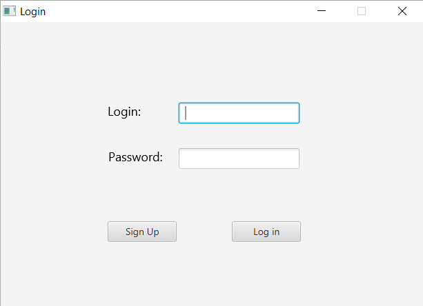
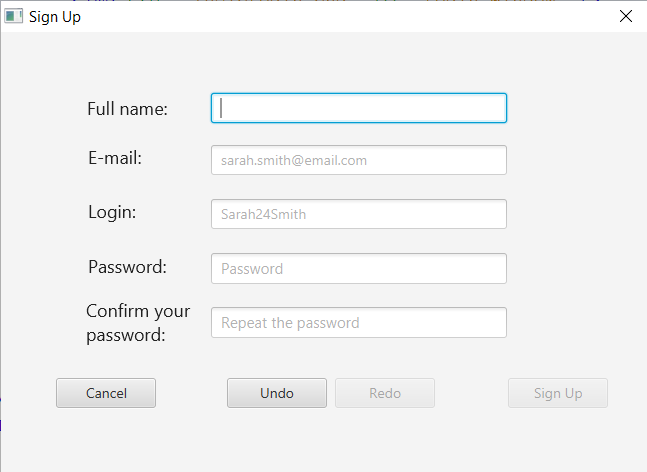
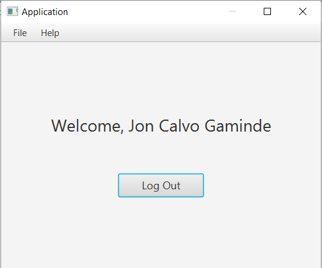

This window is the first page of this application. In it, the user can insert their username and password, and click the Log in button to be logged in the application, and access the LogOut window. If the user has no account, they can click the Sign Up button to access the SignUp window to create an account.
In this is the window, the user can create a new account by inserting their data in the field, and clicking the Sign Up button. If the register is succesful, the user will be logged automaticaly and the LogOut window will show. Clicking the Cancel button instead shows the Login window again.
When the user is logged, this window will show. The user can end their logged state by clicking the Log Out button. This will show the Login window again. In the superior menu, the user can log out; see the help page or the about window.
